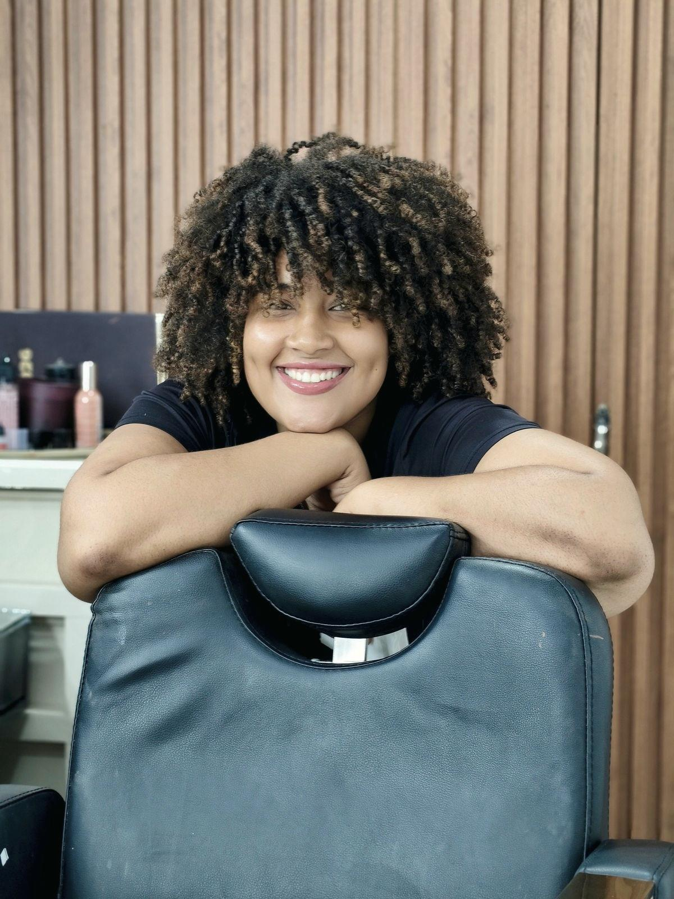
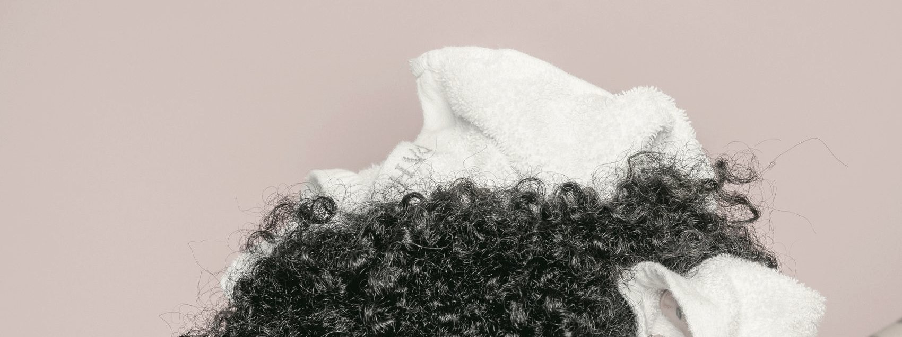
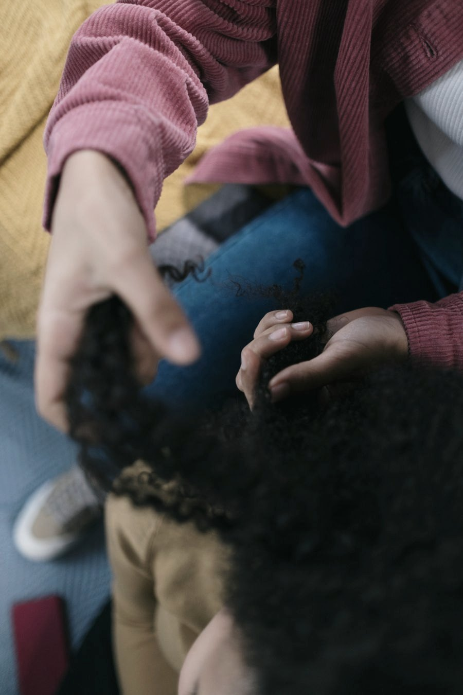
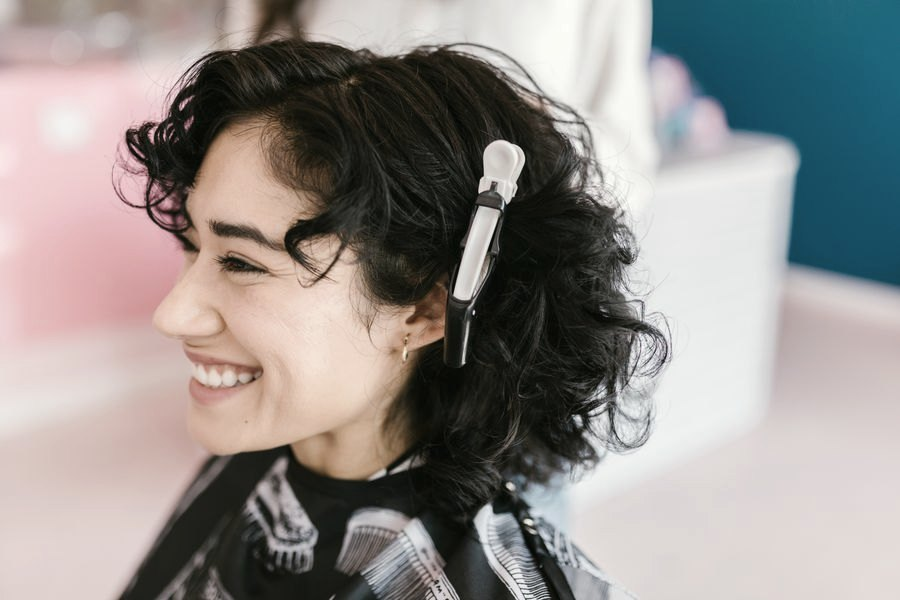
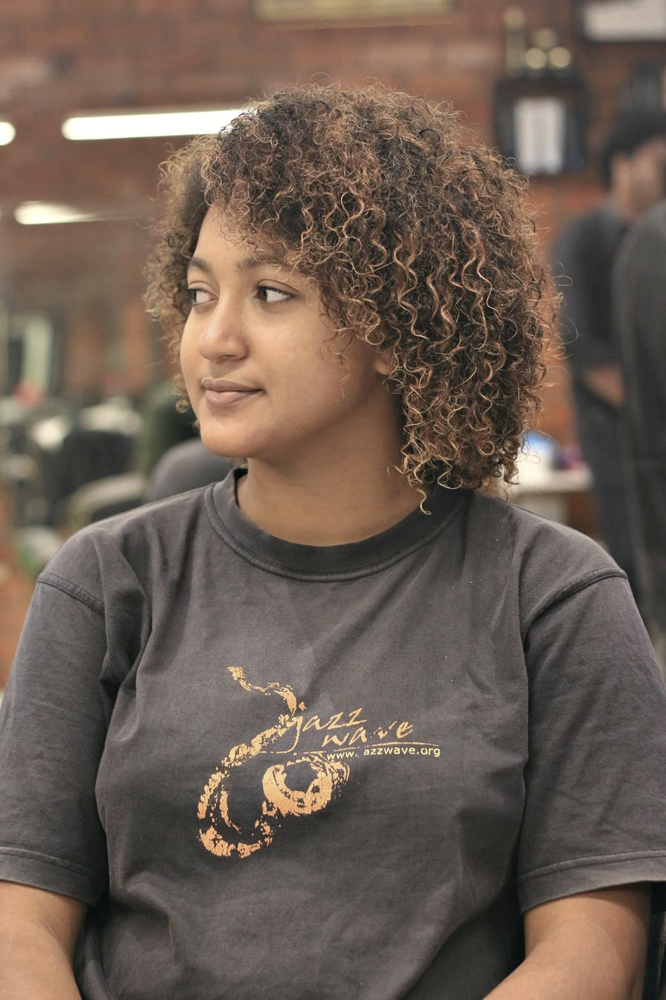
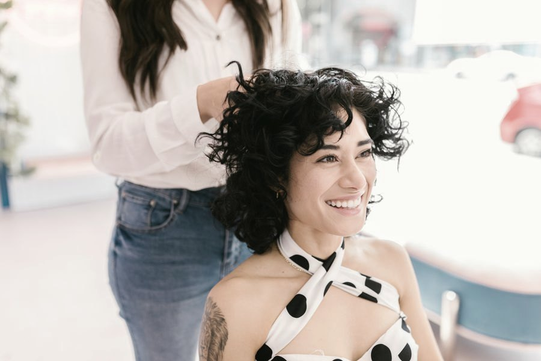

Parque Dez de Novembro · Manaus
Aqui a gente trabalha com a curvatura que já é sua: corte feito no cacho seco, coloração que respeita o fio e finalização que você consegue repetir em casa.

Curvatura
Ondulado, cacheado ou crespo: a leitura da curvatura define o corte, o produto e o jeito de finalizar. É por isso que a gente pergunta antes de cortar.

Definição começa na toalha, não no finalizador.
Serviços
Atendimento com hora marcada, com avaliação do fio antes de qualquer procedimento.
Feito fio a fio no cabelo seco, respeitando como cada mecha se comporta de verdade.
Iluminação e mudança de tom com avaliação prévia da saúde do fio, sem abrir mão da definição.
Reconstrução para cabelo quebrado, com ou sem histórico de química, em etapas planejadas.
Protocolos escolhidos pela porosidade do seu fio, não por pacote fechado.
Definição com difusor e a explicação do passo a passo para você repetir sozinha em casa.
Acompanhamento de quem está saindo da química, com cortes graduais e sem pressa.
Galeria




Sobre
O salão nasceu do incômodo de ver cliente saindo do cabeleireiro com o cacho desmanchado. Aqui a equipe é formada para trabalhar textura: cada profissional sabe ler curvatura, porosidade e histórico químico antes de encostar a tesoura.
São 696 avaliações no Google e uma comunidade de 81 mil pessoas acompanhando o trabalho no Instagram — a maior parte das clientes chega por indicação de outra cliente.
A gente não alisa o que você é. A gente cuida.
Contato